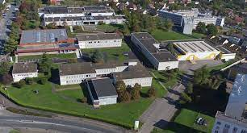

Comme dit précdemment je suis une formation dans
l'IUT de Clermont-Ferrand.
La formation se nomme BUT informatique s'est une
formation qui se déroule sur 3 ans , elle a pour but
de nous faire devenirs des developpeur Web ou d'applications
par le bié de TP/TD/SAE et de 2 stages et
également une possibilité d'alternance en 2eme et 3eme anné
Voice a quoi ressemble notre campus :
